/assets/015.jpg)
# TypeScript
# 使用 webpack 打包 ts 代码
# 安装相应依赖
npm i -D webpack webpack-cli typescript ts-loader |
# webpack 配置 (根目录创建 webpack.config.js)
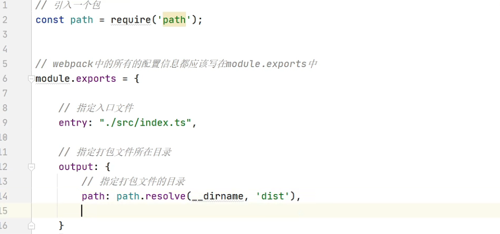
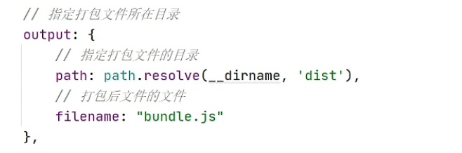
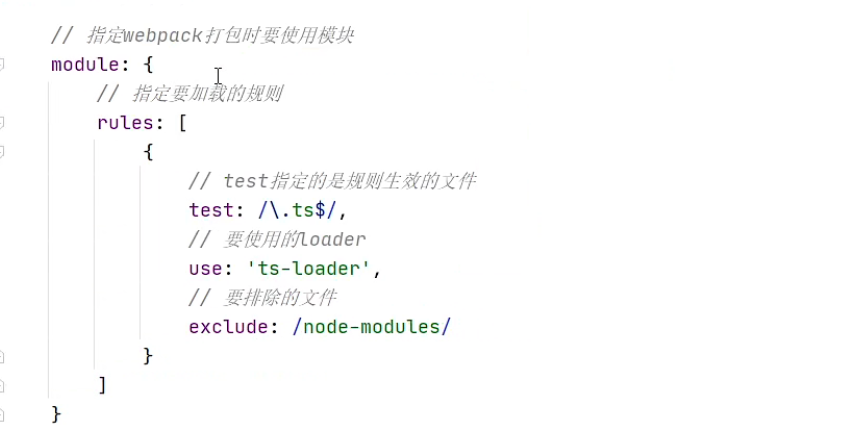
# 配置 package.json (根目录下创建)
//package.json 中 | |
scripts": { | |
"test": "echo \"Error: no test specified\" && exit 1", | |
// 加入这行 | |
"build": "webpack --mode production" | |
} |
# 生成并初始化 ts 配置文件
// 命令行中 | |
tsc -init |
# 生成的 tsconfig.json 配置文件
{ | |
"compilerOptions": { | |
/* Visit https://aka.ms/tsconfig.json to read more about this file */ | |
/* Projects */ | |
// "incremental": true, /* Enable incremental compilation */ | |
// "composite": true, /* Enable constraints that allow a TypeScript project to be used with project references. */ | |
// "tsBuildInfoFile": "./", /* Specify the folder for .tsbuildinfo incremental compilation files. */ | |
// "disableSourceOfProjectReferenceRedirect": true, /* Disable preferring source files instead of declaration files when referencing composite projects */ | |
// "disableSolutionSearching": true, /* Opt a project out of multi-project reference checking when editing. */ | |
// "disableReferencedProjectLoad": true, /* Reduce the number of projects loaded automatically by TypeScript. */ | |
/* Language and Environment */ | |
"target": "es2016", /* Set the JavaScript language version for emitted JavaScript and include compatible library declarations. */ | |
// "lib": [], /* Specify a set of bundled library declaration files that describe the target runtime environment. */ | |
// "jsx": "preserve", /* Specify what JSX code is generated. */ | |
// "experimentalDecorators": true, /* Enable experimental support for TC39 stage 2 draft decorators. */ | |
// "emitDecoratorMetadata": true, /* Emit design-type metadata for decorated declarations in source files. */ | |
// "jsxFactory": "", /* Specify the JSX factory function used when targeting React JSX emit, e.g. 'React.createElement' or 'h' */ | |
// "jsxFragmentFactory": "", /* Specify the JSX Fragment reference used for fragments when targeting React JSX emit e.g. 'React.Fragment' or 'Fragment'. */ | |
// "jsxImportSource": "", /* Specify module specifier used to import the JSX factory functions when using `jsx: react-jsx*`.` */ | |
// "reactNamespace": "", /* Specify the object invoked for `createElement`. This only applies when targeting `react` JSX emit. */ | |
// "noLib": true, /* Disable including any library files, including the default lib.d.ts. */ | |
// "useDefineForClassFields": true, /* Emit ECMAScript-standard-compliant class fields. */ | |
/* Modules */ | |
"module": "es6", /* Specify what module code is generated. */ | |
// "rootDir": "./", /* Specify the root folder within your source files. */ | |
// "moduleResolution": "node", /* Specify how TypeScript looks up a file from a given module specifier. */ | |
// "baseUrl": "./", /* Specify the base directory to resolve non-relative module names. */ | |
// "paths": {}, /* Specify a set of entries that re-map imports to additional lookup locations. */ | |
// "rootDirs": [], /* Allow multiple folders to be treated as one when resolving modules. */ | |
// "typeRoots": [], /* Specify multiple folders that act like `./node_modules/@types`. */ | |
// "types": [], /* Specify type package names to be included without being referenced in a source file. */ | |
// "allowUmdGlobalAccess": true, /* Allow accessing UMD globals from modules. */ | |
// "resolveJsonModule": true, /* Enable importing .json files */ | |
// "noResolve": true, /* Disallow `import`s, `require`s or `<reference>`s from expanding the number of files TypeScript should add to a project. */ | |
/* JavaScript Support */ | |
// "allowJs": true, /* Allow JavaScript files to be a part of your program. Use the `checkJS` option to get errors from these files. */ | |
// "checkJs": true, /* Enable error reporting in type-checked JavaScript files. */ | |
// "maxNodeModuleJsDepth": 1, /* Specify the maximum folder depth used for checking JavaScript files from `node_modules`. Only applicable with `allowJs`. */ | |
/* Emit */ | |
// "declaration": true, /* Generate .d.ts files from TypeScript and JavaScript files in your project. */ | |
// "declarationMap": true, /* Create sourcemaps for d.ts files. */ | |
// "emitDeclarationOnly": true, /* Only output d.ts files and not JavaScript files. */ | |
// "sourceMap": true, /* Create source map files for emitted JavaScript files. */ | |
// "outFile": "./", /* Specify a file that bundles all outputs into one JavaScript file. If `declaration` is true, also designates a file that bundles all .d.ts output. */ | |
// "outDir": "./", /* Specify an output folder for all emitted files. */ | |
// "removeComments": true, /* Disable emitting comments. */ | |
// "noEmit": true, /* Disable emitting files from a compilation. */ | |
// "importHelpers": true, /* Allow importing helper functions from tslib once per project, instead of including them per-file. */ | |
// "importsNotUsedAsValues": "remove", /* Specify emit/checking behavior for imports that are only used for types */ | |
// "downlevelIteration": true, /* Emit more compliant, but verbose and less performant JavaScript for iteration. */ | |
// "sourceRoot": "", /* Specify the root path for debuggers to find the reference source code. */ | |
// "mapRoot": "", /* Specify the location where debugger should locate map files instead of generated locations. */ | |
// "inlineSourceMap": true, /* Include sourcemap files inside the emitted JavaScript. */ | |
// "inlineSources": true, /* Include source code in the sourcemaps inside the emitted JavaScript. */ | |
// "emitBOM": true, /* Emit a UTF-8 Byte Order Mark (BOM) in the beginning of output files. */ | |
// "newLine": "crlf", /* Set the newline character for emitting files. */ | |
// "stripInternal": true, /* Disable emitting declarations that have `@internal` in their JSDoc comments. */ | |
// "noEmitHelpers": true, /* Disable generating custom helper functions like `__extends` in compiled output. */ | |
// "noEmitOnError": true, /* Disable emitting files if any type checking errors are reported. */ | |
// "preserveConstEnums": true, /* Disable erasing `const enum` declarations in generated code. */ | |
// "declarationDir": "./", /* Specify the output directory for generated declaration files. */ | |
// "preserveValueImports": true, /* Preserve unused imported values in the JavaScript output that would otherwise be removed. */ | |
/* Interop Constraints */ | |
// "isolatedModules": true, /* Ensure that each file can be safely transpiled without relying on other imports. */ | |
// "allowSyntheticDefaultImports": true, /* Allow 'import x from y' when a module doesn't have a default export. */ | |
"esModuleInterop": true, /* Emit additional JavaScript to ease support for importing CommonJS modules. This enables `allowSyntheticDefaultImports` for type compatibility. */ | |
// "preserveSymlinks": true, /* Disable resolving symlinks to their realpath. This correlates to the same flag in node. */ | |
"forceConsistentCasingInFileNames": true, /* Ensure that casing is correct in imports. */ | |
/* Type Checking */ | |
"strict": true, /* Enable all strict type-checking options. */ | |
// "noImplicitAny": true, /* Enable error reporting for expressions and declarations with an implied `any` type.. */ | |
// "strictNullChecks": true, /* When type checking, take into account `null` and `undefined`. */ | |
// "strictFunctionTypes": true, /* When assigning functions, check to ensure parameters and the return values are subtype-compatible. */ | |
// "strictBindCallApply": true, /* Check that the arguments for `bind`, `call`, and `apply` methods match the original function. */ | |
// "strictPropertyInitialization": true, /* Check for class properties that are declared but not set in the constructor. */ | |
// "noImplicitThis": true, /* Enable error reporting when `this` is given the type `any`. */ | |
// "useUnknownInCatchVariables": true, /* Type catch clause variables as 'unknown' instead of 'any'. */ | |
// "alwaysStrict": true, /* Ensure 'use strict' is always emitted. */ | |
// "noUnusedLocals": true, /* Enable error reporting when a local variables aren't read. */ | |
// "noUnusedParameters": true, /* Raise an error when a function parameter isn't read */ | |
// "exactOptionalPropertyTypes": true, /* Interpret optional property types as written, rather than adding 'undefined'. */ | |
// "noImplicitReturns": true, /* Enable error reporting for codepaths that do not explicitly return in a function. */ | |
// "noFallthroughCasesInSwitch": true, /* Enable error reporting for fallthrough cases in switch statements. */ | |
// "noUncheckedIndexedAccess": true, /* Include 'undefined' in index signature results */ | |
// "noImplicitOverride": true, /* Ensure overriding members in derived classes are marked with an override modifier. */ | |
// "noPropertyAccessFromIndexSignature": true, /* Enforces using indexed accessors for keys declared using an indexed type */ | |
// "allowUnusedLabels": true, /* Disable error reporting for unused labels. */ | |
// "allowUnreachableCode": true, /* Disable error reporting for unreachable code. */ | |
/* Completeness */ | |
// "skipDefaultLibCheck": true, /* Skip type checking .d.ts files that are included with TypeScript. */ | |
"skipLibCheck": true /* Skip type checking all .d.ts files. */ | |
} | |
} |
# 引入 html 插件
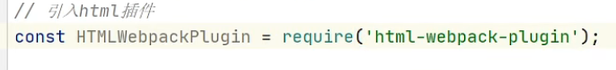
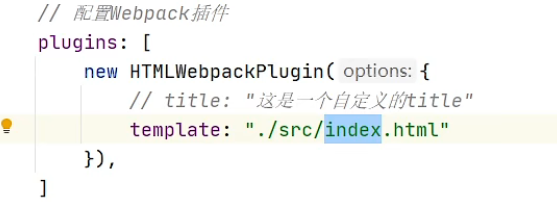
npm i -D html-webpack-plugin |
# 引入 clean 插件
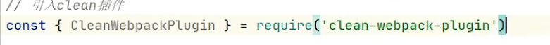
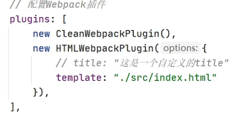
npm i -D clean-webpack-plugin |
# 设置引用模块
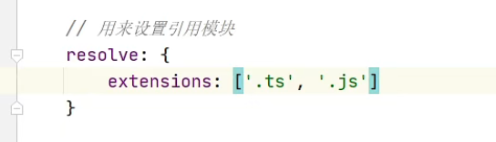
# 引入热更新插件
npm i -D webpack-dev-server |
//package.json 中 | |
"scripts": { | |
"test": "echo \"Error: no test specified\" && exit 1", | |
"build": "webpack --mode production", | |
"start": "webpack serve --open --mode development" | |
} |
# 代码兼容浏览器环境
npm i -D @babel/core @babel/preset-env babel-loader core-js |
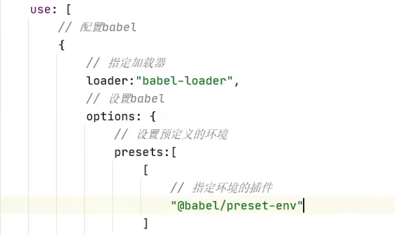
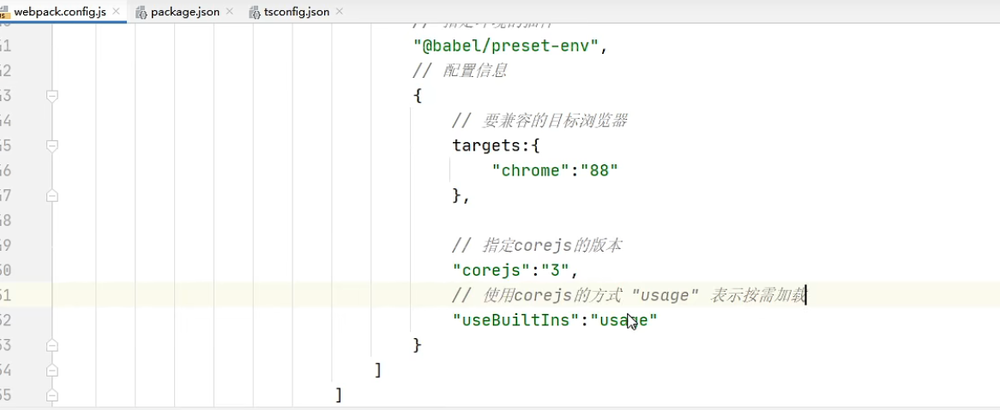
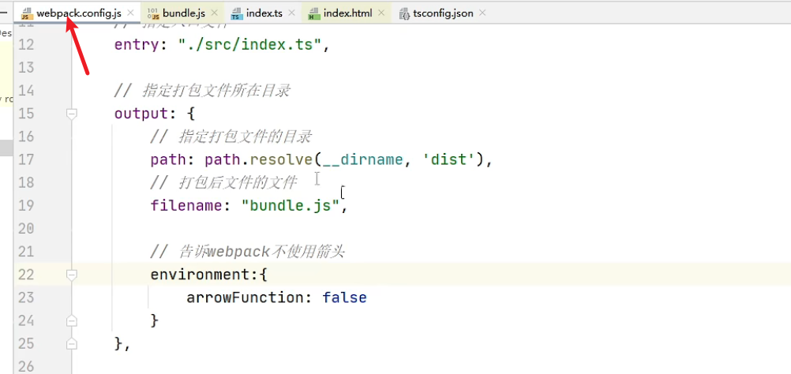